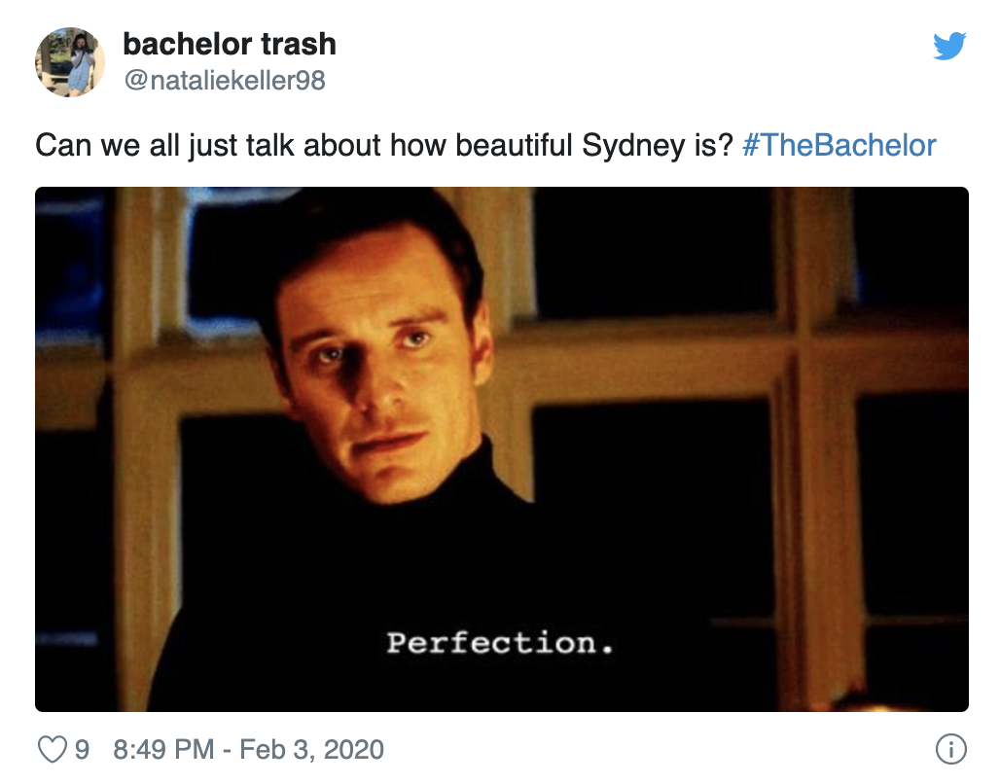

While Hannah Brown’s season of The Bachelorette was a wild ride, Peter Weber’s season is also delivering on the drama. While Brown made a brief appearance at the beginning of the season, that’s far from the craziest thing that’s happened yet. Now, all eyes are on Sydney Hightower, as she insinuated another contestant, Alayah Benavidez, wasn’t being 100% truthful with Weber regarding who she truly is.
The whole debacle has Bachelor fans and contestants choosing sides. And while plenty of folks are now defending Benavidez’s character, it seems Hightower doesn’t want to hear about any of the drama on social media. The contestant posted a few new photos to Instagram, but she turned off the comments. Here’s what happened.
While we like to think all of the women competing for Weber’s love on The Bachelor are here for the right reasons, there’s always the chance that that’s not the case. As we saw on Brown’s season of The Bachelorette, Jed Wyatt was allegedly on the show primarily to advance his music career. And since Weber saw all of that go down first-hand, there’s no doubt he’s worried.
Hightower claimed Benavidez appears to turn into a whole different woman when the cameras are around, and she worried that the pageant queen was totally fake.
Chaos ensued after, as Weber then approached the other women in the house about Benavidez’s personality. And contestant Victoria Paul seemed to seal Benavidez’s fate when she told Weber that Benavidez asked her not to tell producers they knew each other before The Bachelor.
Weber noted he had a strong connection with Benavidez from the start. But the drama proved to be too much, as he sent her packing. Given what we’ve seen from the previews, it looks like Benavidez returns to set the record straight about her authenticity. But in the meantime, she’s receiving an outpouring of love and support from her fans on Instagram.
“You didn’t deserve that treatment from Sidney. I have so much respect for you,” one of Benavidez’s followers commented on her Instagram post.
“Sydney had no right to question you like that!!! Keep being you, girl!” another added.
“Alayah! Sydney just mad she lost the pillow fight to you!!! Keep going she just wants the confidence u have,” yet another fan commented.
With all the support Benavidez received, we wouldn’t be too surprised if Hightower was also getting some hate on the ‘gram. While there are plenty of Bachelor fans who likely agreed with Hightower’s assessment of Benavidez’s demeanor, it seems Hightower wants to take herself out of the Instagram drama completely.
On Jan. 16, Hightower posted a modeling shot of her to Instagram with the caption, “Pasión” — but the comments are turned off. She then added another photo on Jan. 21 showing her in front of a mirror with the caption, “Today was a good day.” Oddly enough, this post doesn’t allow for public comments, either.
The last post on Hightower’s Instagram that allows for comments was added on Jan. 13. And it looks like her followers are sending her love on this post, too
As one follower noted, “since your comments are off on your new post i’ll just tell you here that I love you.”
And another wrote, “I love how calm and honest you are didn’t like that peter called you out in front of the girls, but you handled it well. And you’re gorgeous!!”
We’re hoping Hightower reenables the comments on her future Instagram posts. Perhaps after the drama has passed, she’ll allow it.